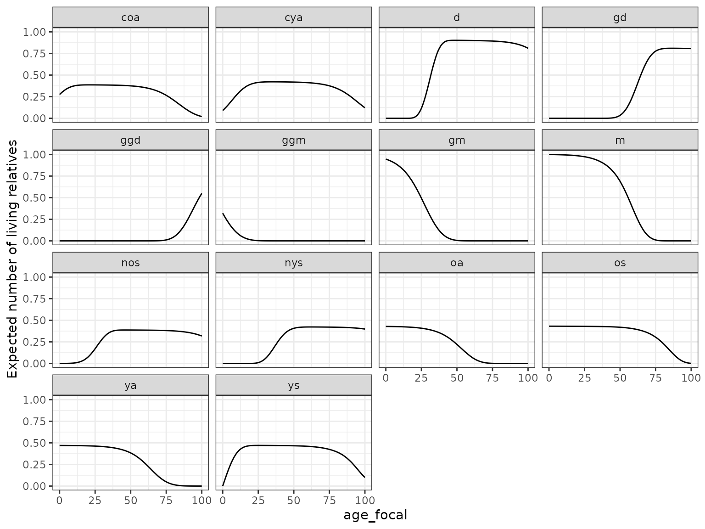
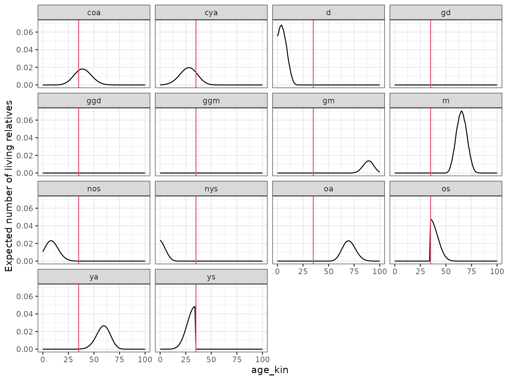
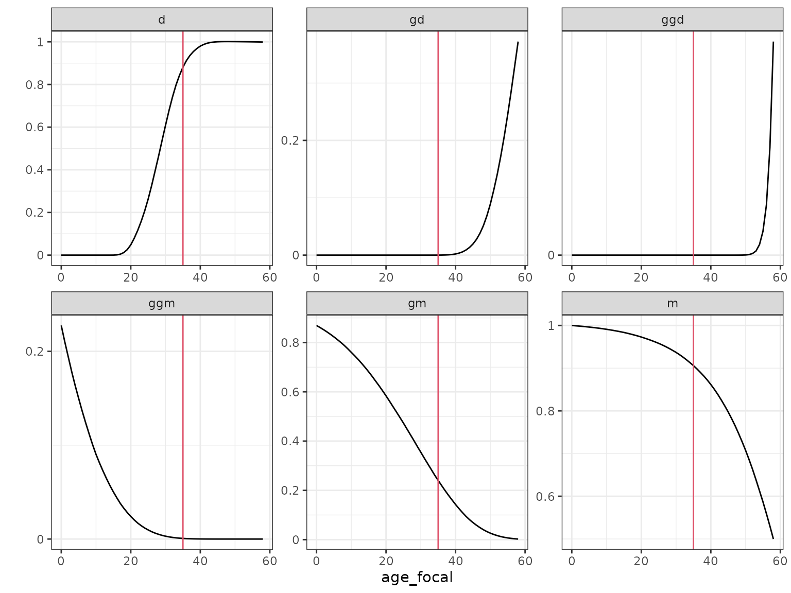
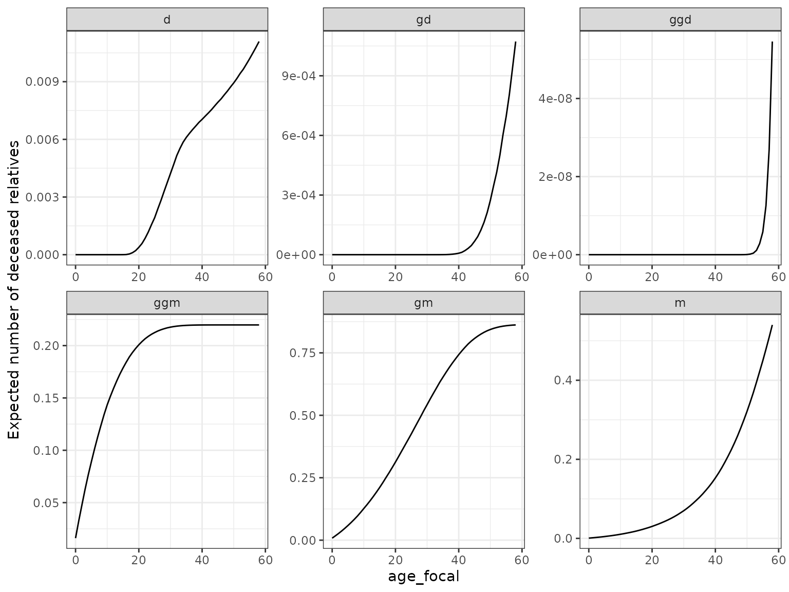
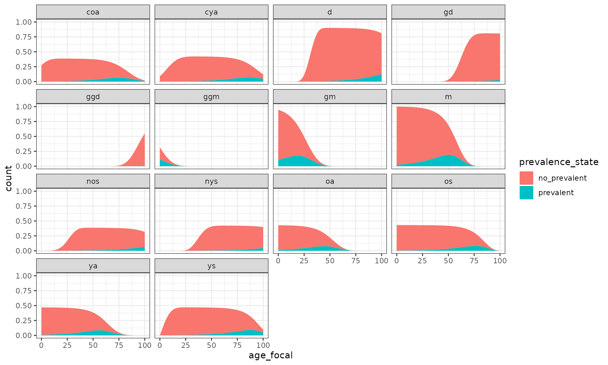
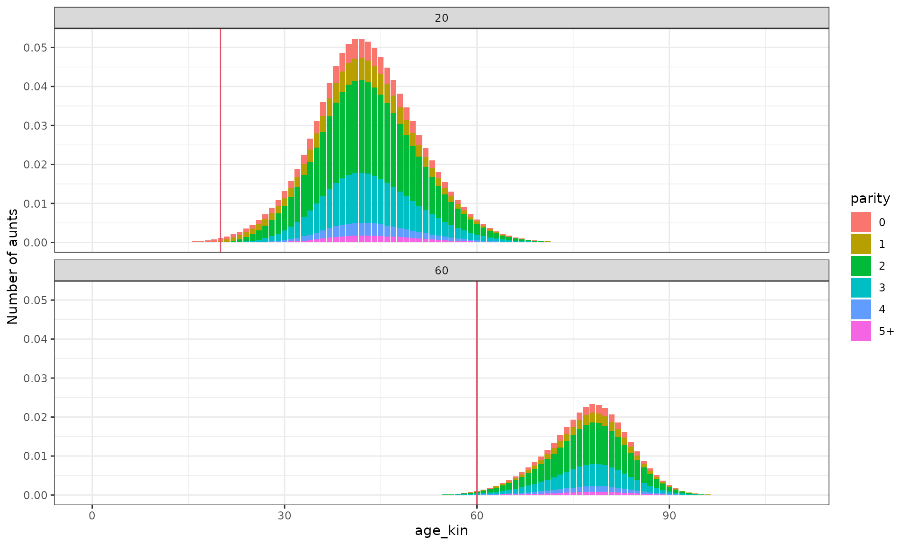
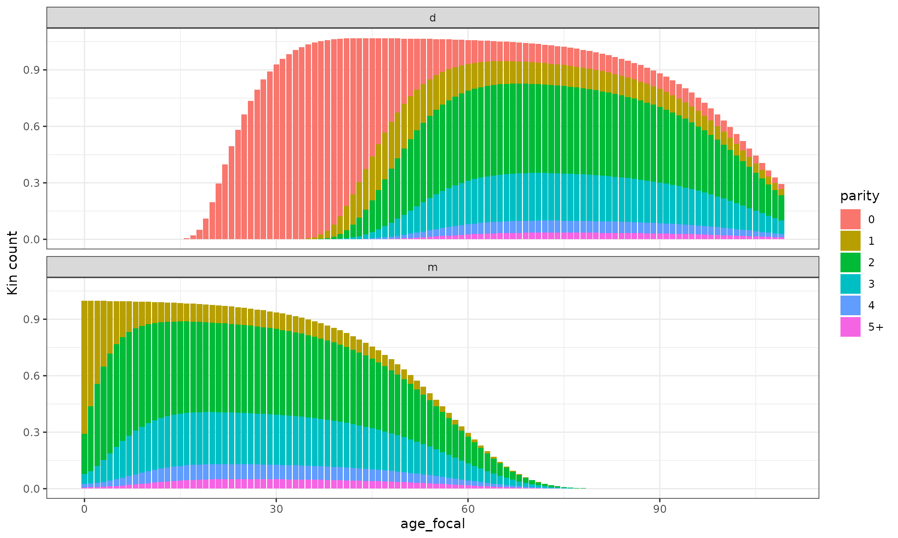

Expected kin counts by type of relative in a one-sex framework
Source:vignettes/Reference_OneSex.Rmd
Reference_OneSex.RmdIn this vignette, we’ll demonstrate how DemoKin can be
used to compute kinship networks for an average member of a given
(female) population. Let us call her Focal: an average Swedish woman who
has always lived in Sweden and whose family has never left the country.
Here, we’ll show how DemoKin can be used to compute the
number and age distribution of Focal’s relatives under a range of
assumptions, including living and deceased kin.
1. Kin counts with time-invariant rates
First, we compute kin counts in a time-invariant
framework. We assume that Focal and all of her relatives experience the
2015 mortality and fertility rates throughout their entire lives (Caswell 2019). The DemoKin package
includes data from Sweden as an example: age-by-year matrices of
survival probabilities (swe_px), survival ratios
(swe_Sx), fertility rates (swe_asfr), and population
numbers (swe_pop). You can see the data contained in
DemoKin with data(package="DemoKin"). This
data comes from the Human Mortality
Database and Human
Fertility Database (see ?DemoKin::get_HMDHFD).
In order to implement the time-invariant models, the function
DemoKin::kin expects a vector of survival ratios and
another vector of fertility rates. In this example, we get the data for
the year 2015, and run the matrix models:
pkgload::load_all()
library(tidyr)
library(dplyr)
library(ggplot2)
library(knitr)
# First, get vectors for a given year
swe_surv_2015 <- swe_px[,"2015"]
swe_asfr_2015 <- swe_asfr[,"2015"]
# Run kinship models
swe_2015 <- kin(p = swe_surv_2015, f = swe_asfr_2015, time_invariant = TRUE)1.1. Value
DemoKin::kin() returns a list containing two data
frames: kin_full and kin_summary.
kin_full contains expected kin counts by year (or
cohort), age of Focal and age of kin. Note that the columns
year and cohort are empty if the argument is
time_invariant = TRUE in kin (as in this
example).
head(swe_2015$kin_full)## # A tibble: 6 × 7
## kin age_kin age_focal living dead cohort year
## <chr> <int> <int> <dbl> <dbl> <lgl> <lgl>
## 1 d 0 0 0 0 NA NA
## 2 d 0 1 0 0 NA NA
## 3 d 0 2 0 0 NA NA
## 4 d 0 3 0 0 NA NA
## 5 d 0 4 0 0 NA NA
## 6 d 0 5 0 0 NA NAkin_summary is a ‘summary’ data frame derived from
kin_full.
head(swe_2015$kin_summary)## # A tibble: 6 × 10
## age_focal kin year cohort count_living mean_age sd_age count_dead
## <int> <chr> <lgl> <lgl> <dbl> <dbl> <dbl> <dbl>
## 1 0 coa NA NA 0.275 8.32 6.14 0.0000633
## 2 0 cya NA NA 0.0898 4.05 3.68 0.0000370
## 3 0 d NA NA 0 NaN NaN 0
## 4 0 gd NA NA 0 NaN NaN 0
## 5 0 ggd NA NA 0 NaN NaN 0
## 6 0 ggm NA NA 0.320 84.4 6.43 0.0287
## # ℹ 2 more variables: count_cum_dead <dbl>, mean_age_lost <dbl>To produce it, we sum over all ages of kin to produce a data frame of expected kin counts by year or cohort and age of Focal (but not by age of kin). Consider this simplified example for living kin counts:
kin_summary_example <-
swe_2015$kin_full %>%
select(year, cohort, kin, age_focal, age_kin, living, dead) %>%
group_by(year, cohort, kin, age_focal) %>%
summarise(count_living = sum(living))
head(kin_summary_example)## # A tibble: 6 × 5
## # Groups: year, cohort, kin [1]
## year cohort kin age_focal count_living
## <lgl> <lgl> <chr> <int> <dbl>
## 1 NA NA coa 0 0.275
## 2 NA NA coa 1 0.291
## 3 NA NA coa 2 0.305
## 4 NA NA coa 3 0.318
## 5 NA NA coa 4 0.330
## 6 NA NA coa 5 0.3411.2. Visualizing the distribution of kin
Let us now visualize the distribution of relatives over Focal’s
lifecourse using the summary data.frame kin_summary:
swe_2015[["kin_summary"]] %>%
ggplot() +
geom_line(aes(age_focal, count_living)) +
theme_bw() +
labs(y = "Expected number of living relatives") +
facet_wrap(~kin)
Here, each relative type is identified by a unique code. Note that
DemoKin uses different codes than Caswell (2019); the equivalence between the two set of
codes is given in the following table:
| DemoKin | Caswell | Labels_female | Labels_male | Labels_2sex |
|---|---|---|---|---|
| coa | t | Cousins from older aunts | Cousins from older uncles | Cousins from older aunts/uncles |
| cya | v | Cousins from younger aunts | Cousins from younger uncles | Cousins from younger aunts/uncles |
| c | NA | Cousins | Cousins | Cousins |
| d | a | Daughters | Sons | Children |
| gd | b | Grand-daughters | Grand-sons | Grand-childrens |
| ggd | c | Great-grand-daughters | Great-grand-sons | Great-grand-childrens |
| ggm | h | Great-grandmothers | Great-grandfathers | Great-grandfparents |
| gm | g | Grandmothers | Grandfathers | Grandparents |
| m | d | Mother | Father | Parents |
| nos | p | Nieces from older sisters | Nephews from older brothers | Niblings from older siblings |
| nys | q | Nieces from younger sisters | Nephews from younger brothers | Niblings from younger siblings |
| n | NA | Nieces | Nephews | Niblings |
| oa | r | Aunts older than mother | Uncles older than fathers | Aunts/Uncles older than parents |
| ya | s | Aunts younger than mother | Uncles younger than father | Aunts/Uncles younger than parents |
| a | NA | Aunts | Uncles | Aunts/Uncles |
| os | m | Older sisters | Older brothers | Older siblings |
| ys | n | Younger sisters | Younger brothers | Younger siblings |
| s | NA | Sisters | Brothers | Siblings |
We can also visualize the age distribution of relatives when Focal is
35 years old (now, with full names to identify each relative type using
the function DemoKin::rename_kin()):
swe_2015[["kin_full"]] %>%
filter(age_focal == 35) %>%
ggplot() +
geom_line(aes(age_kin, living)) +
geom_vline(xintercept = 35, color=2) +
labs(y = "Expected number of living relatives") +
theme_bw() +
facet_wrap(~kin)
The one-sex model implemented in DemoKin assumes that
the given fertility input applies to both sexes. Note that, if using
survival rates
()
instead of probabilities
(),
fertility vectors should account for female person-year exposure, using:
instead of only
;
see Preston et.al (2001)).
The kin function also includes a summary output with the
count of living kin, mean and standard deviation of kin age, by type of
kin, for each Focal’s age:
swe_2015[["kin_summary"]] %>%
filter(age_focal == 35) %>%
select(kin, count_living, mean_age, sd_age) %>%
mutate_if(is.numeric, round, 2) %>%
kable()| kin | count_living | mean_age | sd_age |
|---|---|---|---|
| coa | 0.38 | 39.23 | 8.41 |
| cya | 0.42 | 27.59 | 8.47 |
| d | 0.70 | 5.52 | 3.80 |
| gd | 0.00 | 0.42 | 0.71 |
| ggd | 0.00 | NaN | NaN |
| ggm | 0.00 | 96.90 | 2.60 |
| gm | 0.18 | 88.62 | 5.02 |
| m | 0.93 | 65.36 | 5.10 |
| nos | 0.36 | 9.72 | 5.93 |
| nys | 0.16 | 3.80 | 3.19 |
| oa | 0.37 | 70.04 | 6.32 |
| os | 0.43 | 40.18 | 4.25 |
| ya | 0.45 | 58.87 | 6.75 |
| ys | 0.47 | 28.49 | 4.42 |
Finally, we can visualize the estimated kin counts by type of kin using a network diagram. Following with the age 35:
swe_2015[["kin_summary"]] %>%
filter(age_focal == 35) %>%
select(kin, count = count_living) %>%
plot_diagram(rounding = 2)
2. Kin counts with time-variant rates
The demography of Sweden is, in reality, changing every year. This
means that Focal and her relatives will have experienced changing
mortality and fertility rates over time. We account for this, by using
the time-variant models introduced by Caswell and Song (2021). Let’s take a look at the resulting kin
counts for a Focal born in 1960, limiting the output to the relative
types given in the argument output_kin:
swe_time_varying <-
kin(
p = swe_px,
f = swe_asfr,
n = swe_pop,
time_invariant =FALSE,
output_cohort = 1960,
output_kin = c("d","gd","ggd","m","gm","ggm")
)## Preparing output...## Assuming stable population before 1900.
swe_time_varying$kin_summary %>%
ggplot(aes(age_focal,count_living,color=factor(cohort))) +
scale_y_continuous(name = "",labels = seq(0,3,.2),breaks = seq(0,3,.2))+
geom_line(color = 1)+
geom_vline(xintercept = 35, color=2)+
labs(y = "Expected number of living relatives") +
facet_wrap(~kin,scales = "free")+
theme_bw()
3. Kin deaths
Kin loss can have severe consequences for bereaved relatives. It can
also affect the provision of care support and intergenerational
transfers over the life course. The function kin also
includes information on the number of relatives lost by Focal during her
life, stored in the column count_cum_death:
swe_time_varying$kin_summary %>%
ggplot() +
geom_line(aes(age_focal, count_cum_dead)) +
labs(y = "Expected number of deceased relatives") +
theme_bw() +
facet_wrap(~kin,scales="free")
Given these population-level measures, we can compute Focal’s the mean age at the time of her relative’s death. For a Focal aged 50 yo:
swe_time_varying$kin_summary %>%
filter(age_focal == 50) %>%
select(kin,count_cum_dead,mean_age_lost) %>%
mutate_if(is.numeric, round, 2) %>%
kable()| kin | count_cum_dead | mean_age_lost |
|---|---|---|
| d | 0.01 | 32.59 |
| gd | 0.00 | 47.13 |
| ggd | 0.00 | 49.66 |
| ggm | 0.22 | 8.94 |
| gm | 0.84 | 24.96 |
| m | 0.32 | 37.83 |
4. Prevalences
Given the distribution of kin by age, we can compute the expected portion of living kin in some stage given a set of prevalences by age (e.g., a disease, employment, etc.). This is known as the Sullivan Method in the life-table literature. A matrix formulation for same results can be found in Caswell (2019), which can also be extended to a time-variant framework.
# let´s create some prevalence by age
swe_2015_prevalence <-
tibble(
age_kin = unique(swe_2015$kin_full$age_kin),
prev = .005 * exp(.05 * age_kin)
)
# join to kin count estimates and plot
swe_2015$kin_full %>%
left_join(swe_2015_prevalence) %>%
group_by(kin, age_focal) %>%
summarise(
prevalent = sum(living * prev),
no_prevalent = sum(living * (1-prev))
) %>%
pivot_longer(cols = prevalent:no_prevalent, names_to = "prevalence_state", values_to = "count") %>%
ggplot(aes(x=age_focal, y = count)) +
geom_area(aes(fill=prevalence_state)) +
facet_wrap(~kin) +
theme_bw()
5. Multi-state models
DemoKin allows the computation of kin structures in a
multi-state framework, classifying individuals jointly by age and some
other feature (e.g., stages of a disease). For this, we need mortality
and fertility data for each possible stage and probabilities of changing
state by age.
Let’s consider the example of Slovakia given by Caswell (2021), where stages are parity states.
DemoKin includes the data to replicate this analysis for
the year 1980:
- The data.frame
svk_fxsis the fertility rate by age (rows) for each parity stage (columns). The first stage represents ; the second stage, ; and so on, until finally the sixth stage represents . - The data.frame
svk_Hxshas a similar structure but with ’s in the ages corresponding to newborns (the first age in our example). - The data.frame
svk_pxshas the same structure and represents survival probabilities. - The list
svk_Uxshas the same number of elements and ages (in this case 110, where is 109). For each age, it contains a column-stochastic transition matrix with dimension for the state space. The entries are transition probabilities conditional on survival.
Following Caswell (2020), we can obtain the joint age-parity kin structure:
# use birth_female=1 because fertility is for female only
demokin_svk1980_caswell2020 <-
kin_multi_stage(
U = svk_Uxs,
f = svk_fxs,
D = svk_pxs,
H = svk_Hxs,
birth_female=1,
parity = TRUE)Note that the function ask for risks already in a certain matrix format. As an example, consider the age-parity distribution of aunts, when Focal is 20 and 60 yo (this is equivalent to Figure 4 in Caswell (2021)).
demokin_svk1980_caswell2020 %>%
filter(kin %in% c("oa","ya"), age_focal %in% c(20,60)) %>%
mutate(parity = as.integer(stage_kin)-1,
parity = case_when(parity == 5 ~ "5+", T ~ as.character(parity))
) %>%
group_by(age_focal, age_kin, parity) %>%
summarise(count= sum(living)) %>%
ggplot() +
geom_bar(aes(x=age_kin, y = count, fill=parity), stat = "identity") +
geom_vline(aes(xintercept = age_focal), col=2) +
labs(y = "Number of aunts") +
theme_bw() +
facet_wrap(~age_focal, nrow = 2)
We can also see the portion of living daughters and mothers at different parity stages over Focal’s life-course (this is equivalent to Figure 9 and 10 in Caswell (2021)).
demokin_svk1980_caswell2020 %>%
filter(kin %in% c("d","m")) %>%
mutate(parity = as.integer(stage_kin)-1,
parity = case_when(parity == 5 ~ "5+", T ~ as.character(parity))) %>%
group_by(age_focal, kin, parity) %>%
summarise(count= sum(living)) %>%
DemoKin::rename_kin() %>%
ggplot() +
geom_bar(aes(x=age_focal, y = count, fill=parity), stat = "identity") +
labs(y = "Kin count") +
theme_bw() +
facet_wrap(~kin, nrow = 2)
This function kin_multi_stage can be generalized to any
kind of state (be sure to set parameter parity = FALSE, de
default).